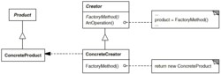
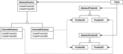

设计模式编辑
设 计模式（Design pattern）是一套被反复使用、多数人知晓的、经过分类编目的、代码设计经验的总结。使用设计模式是为了可重用代码、让代码更容易被他人理解、保证代 码可靠性。 毫无疑问，设计模式于己于他人于系统都是多赢的；设计模式使代码编制真正工程化；设计模式是软件工程的基石脉络，如同大厦的结构一样。
目录
- ▪ 原型模式（Prototype）
- ▪ 单例模式（Singleton）
- ▪ 适配器模式（Adapter）
- ▪ 桥接模式（Bridge）
- ▪ 组合模式（Composite）
- ▪ 装饰模式（Decorator）
- ▪ 门面模式（Facade）
- ▪ 享元模式（Flyweight）
- ▪ 代理模式（Proxy）
- ▪ 职责链模式（Chain of Responsibility）
- ▪ 命令模式（Command）
- ▪ 解析器模式（Interpreter）
- ▪ 迭代器模式（Iterator）
- ▪ 中介模式（Mediator）
- ▪ 备忘录模式（Memento）
- ▪ 观察者模式（Observer）
- ▪ 状态模式（State）
- ▪ 策略模式（Strategy）
- ▪ 模版模式（Template）
- ▪ 访问者模式（Visitor）
1设计框架编辑
可复用面向对象软件系统一般划分为两大类：应用程序工具箱和框架（Framework），我们平时开发的具体软件都是应用程序，Java的API属于工具箱；而框架是构成一类特定软件可复用设计的一组相互协作的类，EJB（EnterpriseJavaBeans）是Java应用于企业计算的框架。
框架通常定义了应用体系的整体结构类和对象的关系等等设计参数，以便于具体应用实现者能集中精力于应用本身的特定细节。框架主要记录软件应用中共同的设计决策，框架强调设计复用，因此框架设计中必然要使用设计模式。
另外，设计模式有助于对框架结构的理解，成熟的框架通常使用了多种设计模式,如果你熟悉这些设计模式，毫无疑问，你将迅速掌握框架的结构，我们一般开发者如果突然接触EJB、J2EE等框架，会觉得特别难学、难掌握，那么转而先掌握设计模式，无疑是给了你剖析EJB或J2EE系统的一把利器。
2设计原则编辑
为什么要提倡“Design Pattern呢？根本原因是为了代码复用，增加可维护性。那么怎么才能实现代码复用呢？面向对象有几个原则：开闭原则（Open Closed Principle，OCP）、里氏代换原则（Liskov Substitution Principle，LSP）、依赖倒转原则（Dependency Inversion Principle，DIP）、接口隔离原则（Interface Segregation Principle，ISP）、合成/聚合复用原则（Composite/Aggregate Reuse Principle，CARP）、最小知识原则（Principle of Least Knowledge，PLK，也叫迪米特法则）。开闭原则具有理想主义的色彩，它是面向对象设计的终极目标。其他几条，则可以看做是开闭原则的实现方法。
设计模式就是实现了这些原则，从而达到了代码复用、增加可维护性的目的。
开闭原则
此 原则是由Bertrand Meyer提出的。原文是：“Software entities should be open for extension,but closed for modification”。就是说模块应对扩展开放，而对修改关闭。模块应尽量在不修改原（是“原”，指原来的代码）代码的情况下进行扩展。那么怎么扩 展呢？我们看工厂模式“factory pattern”：假设中关村有一个卖盗版盘和毛片的小子，我们给他设计一“光盘销售管理软件”。我们应该先设计一“光盘”接口。如图：
[pre]______________
|<>|
| 光盘 |
|_____________|
|+卖() |
| |
|_____________|[/pre]
而盗版盘和毛片是其子类。小子通过“DiscFactory”来管理这些光盘。代码为：
1 2 3 4 5 6 7 8 9 10 11 | publicclassDiscFactory{publicstatic光盘getDisc(Stringname){//return(光盘)Class.forName(name).getInstance();return(光盘)Class.forName(name).newInstance();}} |
有人要买盗版盘，怎么实现呢？
1 2 3 4 5 6 | publicclass小子{publicstaticvoidmain(String[]args){光盘d=DiscFactory.getDisc("盗版盘");d.卖();}} |
如果有一天，这小子良心发现了，开始卖正版软件。没关系，我们只要再创建一个“光盘”的子类“正版软件”就可以了，不需要修改原结构和代码。怎么样？对扩展开放，对修改关闭——“开闭原则”。
工厂模式是对具体产品进行扩展，有的项目可能需要更多的扩展性，要对这个“工厂”也进行扩展，那就成了“抽象工厂模式”。
里氏代换原则
里氏代换原则是由Barbara Liskov提出的。如果调用的是父类的话，那么换成子类也完全可以运行。比如：
1 2 | 光盘d=new盗版盘();d.卖(); |
要 将“盗版盘”类改为“毛片”类，没问题，完全可以运行。Java编译程序会检查程序是否符合里氏代换原则。还记得java继承的一个原则吗？子类 override方法的访问权限不能小于父类对应方法的访问权限。比如“光盘”中的方法“卖”访问权限是“public”，那么“盗版盘”和“毛片”中的 “卖”方法就不能是protected或private，编译不能通过。为什么要这样呢？你想啊：如果“盗版盘”的“卖”方法是private。那么下面 这段代码就不能执行了：
1 2 | 光盘d=new盗版盘();d.卖(); |
可以说：里氏代换原则是继承复用的一个基础。
依赖倒转原则
抽象不应该依赖于细节，细节应当依赖于抽象。
要针对接口编程，而不是针对实现编程。
传递参数，或者在组合聚合关系中，尽量引用层次高的类。
主要是在构造对象时可以动态的创建各种具体对象，当然如果一些具体类比较稳定，就不必在弄一个抽象类做它的父类，这样有画蛇添足的感觉
接口隔离原则
定制服务的例子，每一个接口应该是一种角色，不多不少，不干不该干的事，该干的事都要干。
合成/聚合复用原则
合 成/聚合复用原则（Composite/Aggregate Reuse Principle，CARP）经常又叫做合成复用原则。合成/聚合复用原则就是在一个新的对象里面使用一些已有的对象，使之成为新对象的一部分；新的对 象通过向这些对象的委派达到复用已有功能的目的。它的设计原则是：要尽量使用合成/聚合，尽量不要使用继承。
就是说要少用继承，多用合成关系来实现。我曾经这样写过程序：有几个类要与数据库打交道，就写了一个数据库操作的 类，然后别的跟数据库打交道的类都继承这个。结果后来，我修改了数据库操作类的一个方法，各个类都需要改动。“牵一发而动全身”！面向对象是要把波动限制 在尽量小的范围。
在Java中，应尽量针对Interface编程，而非实现类。这样，更换子类不会影响调用它方法的代码。要让各个类尽可能少的跟别人联系，“不要与陌生人说话”。这样，城门失火，才不至于殃及池鱼。扩展性和维护性才能提高。
理解了这些原则，再看设计模式，只是在具体问题上怎么实现这些原则而已。张无忌学太极拳，忘记了所有招式，打倒了“玄冥二老”，所谓“心中无招”。设计模式可谓招数，如果先学通了各种模式，又忘掉了所有模式而随心所欲，可谓OO（Object-Oriented，面向对象）之最高境界。呵呵，搞笑，搞笑！
最少知识原则
也叫迪米特法则。不要和陌生人说话。
3四要素编辑
综述
设计模式使人们可以更加简单方便地复用成功的设计和体系结构。将已证实的技术表述成设计模式也会使新系统开发者更加容易理解其设计思路。
模式名称（Pattern Name）
一 个助记名，它用一两个词来描述模式的问题、解决方案和效果。命名一个新的模式增加了我们的设计词汇。设计模式允许我们在较高的抽象层次上进行设计。基于一 个模式词汇表，我们自己以及同事之间就可以讨论模式并在编写文档时使用它们。模式名可以帮助我们思考，便于我们与其他人交流设计思想及设计结果。找到恰当 的模式名也是我们设计模式编目工作的难点之一。
问题（Problem）
描述了应该在何时使用模式。它解释了设计问题和问题存在的前因后果，它可能描述了特定的设计问题，如怎样用对象表示算法等。也可能描述了导致不灵活设计的类或对象结构。有时候，问题部分会包括使用模式必须满足的一系列先决条件。
解决方案（Solution）
描述了设计的组成成分，它们之间的相互关系及各自的职责和协作方式。因为模式就像一个模板，可应用于多种不同场合，所以解决方案并不描述一个特定而具体的设计或实现，而是提供设计问题的抽象描述和怎样用一个具有一般意义的元素组合（类或对象组合）来解决这个问题。
效果（Consequences）
描述了模式应用的效果及使用模式应权衡的问题。尽管我们描述设计决策时，并不总提到模式效果，但它们对于评价设计选择和理解使用模式的代价及好处具有重要意义。软件效果大多关注对时间和空间的衡量，它们也表述了语言和实现问题。因为复用是面向对象设计的要素之一，所以模式效果包括它对系统的灵活性、扩充性或可移植性的影响，显式地列出这些效果对理解和评价这些模式很有帮助。
4基本模式编辑
综述
设计模式分为三种类型，共23种。
- 创建型模式：单例模式、抽象工厂模式、建造者模式、工厂模式、原型模式。
- 结构型模式：适配器模式、桥接模式、装饰模式、组合模式、外观模式、享元模式、代理模式。
- 行为型模式：模版方法模式、命令模式、迭代器模式、观察者模式、中介者模式、备忘录模式、解释器模式、状态模式、策略模式、职责链模式、访问者模式。
按字典序排列简介如下。
Abstract Factory（抽象工厂模式）：提供一个创建一系列相关或相互依赖对象的接口，而无需指定它们具体的类。
Adapter（适配器模式）：将一个类的接口转换成客户希望的另外一个接口。Adapter模式使得原本由于接口不兼容而不能一起工作的那些类可以一起工作。
Bridge（桥接模式）：将抽象部分与它的实现部分分离，使它们都可以独立地变化。
Builder（建造者模式）：将一个复杂对象的构建与它的表示分离，使得同样的构建过程可以创建不同的表示。
Chain of Responsibility（职责链模式）：为解除请求的发送者和接收者之间耦合，而使多个对象都有机会处理这个请求。将这些对象连成一条链，并沿着这条链传递该请求，直到有一个对象处理它。
Command（命令模式）：将一个请求封装为一个对象，从而使你可用不同的请求对客户进行参数化；对请求排队或记录请求日志，以及支持可取消的操作。
Composite（组合模式）：将对象组合成树形结构以表示“部分-整体”的层次结构。它使得客户对单个对象和复合对象的使用具有一致性。
Decorator（装饰模式）：动态地给一个对象添加一些额外的职责。就扩展功能而言， 它比生成子类方式更为灵活。
Facade（外观模式）：为子系统中的一组接口提供一个一致的界面，Facade模式定义了一个高层接口，这个接口使得这一子系统更加容易使用。
Factory Method（工厂模式）：定义一个用于创建对象的接口，让子类决定将哪一个类实例化。Factory Method使一个类的实例化延迟到其子类。
Flyweight（享元模式）：运用共享技术有效地支持大量细粒度的对象。
Interpreter（解析器模式）：给定一个语言, 定义它的文法的一种表示，并定义一个解释器, 该解释器使用该表示来解释语言中的句子。
Iterator（迭代器模式）：提供一种方法顺序访问一个聚合对象中各个元素，而又不需暴露该对象的内部表示。
Mediator（中介模式）：用一个中介对象来封装一系列的对象交互。中介者使各对象不需要显式地相互引用，从而使其耦合松散，而且可以独立地改变它们之间的交互。
Memento（备忘录模式）：在不破坏封装性的前提下，捕获一个对象的内部状态，并在该对象之外保存这个状态。这样以后就可将该对象恢复到保存的状态。
Observer（观察者模式）：定义对象间的一种一对多的依赖关系,以便当一个对象的状态发生改变时,所有依赖于它的对象都得到通知并自动刷新。
Prototype（原型模式）：用原型实例指定创建对象的种类，并且通过拷贝这个原型来创建新的对象。
Proxy（代理模式）：为其他对象提供一个代理以控制对这个对象的访问。
Singleton（单例模式）： 保证一个类仅有一个实例，并提供一个访问它的全局访问点。 单例模式是最简单的设计模式之一，但是对于Java的开发者来说，它却有很多缺陷。在九月的专栏中，David Geary探讨了单例模式以及在面对多线程（multi-threading）、类装载器（class loaders）和序列化（serialization）时如何处理这些缺陷。
State（状态模式）：允许一个对象在其内部状态改变时改变它的行为。对象看起来似乎修改了它所属的类。
Strategy（策略模式）：定义一系列的算法,把它们一个个封装起来, 并且使它们可相互替换。本模式使得算法的变化可独立于使用它的客户。
Template Method（模板方法模式）：定义一个操作中的算法的骨架，而将一些步骤延迟到子类中。Template Method使得子类可以不改变一个算法的结构即可重定义该算法的某些特定步骤。
Visitor（访问者模式）：表示一个作用于某对象结构中的各元素的操作。它使你可以在不改变各元素的类的前提下定义作用于这些元素的新操作。
从下一节开始，详细描述以下每一种设计模式。
工厂模式（Factory）

意图工厂模式（Factory）
定义一个用于创建对象的接口，让子类决定实例化哪一个类。Factory Method 使一个类的实例化延迟到其子类。
适用性
- 当一个类不知道它所必须创建的对象的类的时候。
- 当一个类希望由它的子类来指定它所创建的对象的时候。
- 当类将创建对象的职责委托给多个帮助子类中的某一个，并且你希望将哪一个帮助子类是代理者这一信息局部化的时候。
抽象工厂模式（Abstract Factory）

意图抽象工厂模式（Abstract Factory）
提供一个创建一系列相关或相互依赖对象的接口，而无需指定它们具体的类。
适用性
- 一个系统要独立于它的产品的创建、组合和表示时。
- 一个系统要由多个产品系列中的一个来配置时。
- 当你要强调一系列相关的产品对象的设计以便进行联合使用时。
- 当你提供一个产品类库，而只想显示它们的接口而不是实现时。
建造者模式（Builder）
意图

建造者模式
适用性
- 当创建复杂对象的算法应该独立于该对象的组成部分以及它们的装配方式时。
- 当构造过程必须允许被构造的对象有不同的表示时。
原型模式（Prototype）
意图

原型模式
适用性
- 当要实例化的类是在运行时刻指定时，例如，通过动态装载；或者
- 为了避免创建一个与产品类层次平行的工厂类层次时；或者
- 当一个类的实例只能有几个不同状态组合中的一种时。建立相应数目的原型并克隆它们可能比每次用合适的状态手工实例化该类更方便一些。
单例模式（Singleton）
意图

单例模式
适用性
- 当类只能有一个实例而且客户可以从一个众所周知的访问点访问它时。
- 当这个唯一实例应该是通过子类化可扩展的，并且客户应该无需更改代码就能使用一个扩展的实例时。
适配器模式（Adapter）
意图

适配器模式
适用性
- 你想使用一个已经存在的类，而它的接口不符合你的需求。
- 你想创建一个可以复用的类，该类可以与其他不相关的类或不可预见的类（即那些接口可能不一定兼容的类）协同工作。
- （仅适用于对象Adapter）你想使用一些已经存在的子类，但是不可能对每一个都进行子类化以匹配它们的接口。对象适配器可以适配它的父类接口。
桥接模式（Bridge）
意图

桥接模式
适用性
- 你不希望在抽象和它的实现部分之间有一个固定的绑定关系。例如这种情况可能是因为，在程序运行时刻实现部分应可以被选择或者切换。
- 类的抽象以及它的实现都应该可以通过生成子类的方法加以扩充。这时B r i d g e 模式使你可以对不同的抽象接口和实现部分进行组合，并分别对它们进行扩充。
- 对一个抽象的实现部分的修改应对客户不产生影响，即客户的代码不必重新编译。
- 有许多类要生成。这样一种类层次结构说明你必须将一个对象分解成两个部分。Rumbaugh称这种类层次结构为“嵌套的普化”（nested generalizations ）。
- 你想在多个对象间共享实现（可能使用引用计数），但同时要求客户并不知道这一点。一个简单的例子便是Coplien的String类，在这个类中多个对象可以共享同一个字符串表示（StringRep）。
组合模式（Composite）
意图

组合模式
适用性
- 你想表示对象的部分—整体层次结构。
- 你希望用户忽略组合对象与单个对象的不同，用户将统一地使用组合结构中的所有对象。
装饰模式（Decorator）
意图

装饰模式
适用性
- 在不影响其他对象的情况下，以动态、透明的方式给单个对象添加职责。
- 处理那些可以撤消的职责。
- 当不能采用生成子类的方法进行扩充时。一种情况是，可能有大量独立的扩展，为支持每一种组合将产生大量的子类，使得子类数目呈爆炸性增长。另一种情况可能是因为类定义被隐藏，或类定义不能用于生成子类。
门面模式（Facade）
意图

门面模式
适用性
- 当 你要为一个复杂子系统提供一个简单接口时。子系统往往因为不断演化而变得越来越复杂。大多数模式使用时都会产生更多更小的类。这使得子系统更具可重用性， 也更容易对子系统进行定制，但这也给那些不需要定制子系统的用户带来一些使用上的困难。Facade可以提供一个简单的缺省视图，这一视图对大多数用户来 说已经足够，而那些需要更多的可定制性的用户可以越过Facade层。
- 客户程序与抽象类的实现部分之间存在着很大的依赖性。引入Facade将这个子系统与客户以及其他的子系统分离，可以提高子系统的独立性和可移植性。
- 当你需要构建一个层次结构的子系统时，使用门面模式定义子系统中每层的入口点。如果子系统之间是相互依赖的，你可以让它们仅通过Facade进行通讯，从而简化了它们之间的依赖关系。
享元模式（Flyweight）
意图

享元模式
适用性
- 一个应用程序使用了大量的对象。
- 完全由于使用大量的对象，造成很大的存储开销。
- 对象的大多数状态都可变为外部状态。
- 如果删除对象的外部状态，那么可以用相对较少的共享对象取代很多组对象。
- 应用程序不依赖于对象标识。由于Flyweight对象可以被共享，对于概念上明显有别的对象，标识测试将返回真值。
代理模式（Proxy）
意图

代理模式
适用性
在需要用比较通用和复杂的对象指针代替简单的指针的时候，使用Proxy模式。下面是一 些可以使用Proxy模式常见情况：
- 远程代理（Remote Proxy）为一个对象在不同的地址空间提供局部代表。
- 虚代理（Virtual Proxy）根据需要创建开销很大的对象。
- 保护代理（Protection Proxy）控制对原始对象的访问。保护代理用于对象应该有不同 的访问权限的时候。
- 智能指引（Smart Reference）取代了简单的指针，它在访问对象时执行一些附加操作。 它的典型用途包括：
- 对指向实际对象的引用计数，这样当该对象没有引用时，可以自动释放它（也称为SmartPointers）。
- 当第一次引用一个持久对象时，将它装入内存。
- 在访问一个实际对象前，检查是否已经锁定了它，以确保其他对象不能改变它。
职责链模式（Chain of Responsibility）
意图

职责链模式
适用性
- 有多个的对象可以处理一个请求，哪个对象处理该请求运行时刻自动确定。
- 你想在不明确指定接收者的情况下，向多个对象中的一个提交一个请求。
- 可处理一个请求的对象集合应被动态指定。
命令模式（Command）
意图

命令模式
适用性
- 像 上面讨论的MenuItem对象那样，抽象出待执行的动作以参数化某对象。你可用过程语言中的回调（callback）函数表达这种参数化机制。所谓回调 函数是指函数先在某处注册，而它将在稍后某个需要的时候被调用。Command模式是回调机制的一个面向对象的替代品。
- 在不同的时刻指定、排列和执行请求。一个Command对象可以有一个与初始请求无关的生存期。如果一个请求的接收者可用一种与地址空间无关的方式表达，那么就可将负责该请求的命令对象传送给另一个不同的进程并在那儿实现该请求。
- 支持取消操作。 Command的Execute操作可在实施操作前将状态存储起来，在取消操作时这个状态用来消除该操作的影响。Command接口必须添加一个 Execute操作，该操作取消上一次Execute调用的效果。执行的命令被存储在一个历史列表中。可通过向后和向前遍历这一列表并分别调用 Unexecute和Execute来实现重数不限的“取消”和“重做”。
- 支持修改日志，这样当系统崩溃时，这些修改可以被重做一遍。在Command接口中添加装载操作和存储操作，可以用来保持变动的一个一致的修改日志。从崩溃中恢复的过程包括从磁盘中重新读入记录下来的命令并用Execute操作重新执行它们。
- 用构建在原语操 作上的高层操作构造一个系统。这样一种结构在支持事务（Transaction）的信息系统中很常见。一个事务封装了对数据的一组变动。Command模 式提供了对事务进行建模的方法。Command有一个公共的接口，使得你可以用同一种方式调用所有的事务。同时使用该模式也易于添加新事务以扩展系统。
解析器模式（Interpreter）
意图

解析器模式
适用性
- 当有一个语言需要解释执行, 并且你可将该语言中的句子表示为一个抽象语法树时，可使用解释器模式。而当存在以下情况时该模式效果最好：
- 该文法简单对于复杂的文法, 文法的类层次变得庞大而无法管理。此时语法分析程序生成器这样的工具是更好的选择。它们无需构建抽象语法树即可解释表达式, 这样可以节省空间而且还可能节省时间。
- 效率不是一个关键问题最高效的解释器通常不是通过直接解释语法分析树实现的, 而是首先将它们转换成另一种形式。例如，正则表达式通常被转换成状态机。但即使在这种情况下, 转换器仍可用解释器模式实现, 该模式仍是有用的。
迭代器模式（Iterator）
意图

迭代器模式
适用性
- 访问一个聚合对象的内容而无需暴露它的内部表示。
- 支持对聚合对象的多种遍历。
- 为遍历不同的聚合结构提供一个统一的接口（即, 支持多态迭代）。
中介模式（Mediator）
意图

中介模式
适用性
- 一组对象以定义良好但是复杂的方式进行通信。产生的相互依赖关系结构混乱且难以理解。
- 一个对象引用其他很多对象并且直接与这些对象通信,导致难以复用该对象。
- 想定制一个分布在多个类中的行为，而又不想生成太多的子类。
备忘录模式（Memento）
意图

备忘录模式
适用性
- 必须保存一个对象在某一个时刻的(部分)状态, 这样以后需要时它才能恢复到先前的状态。
- 如果一个用接口来让其它对象直接得到这些状态，将会暴露对象的实现细节并破坏对象的封装性。
观察者模式（Observer）
意图

观察者模式
适用性
- 当一个抽象模型有两个方面, 其中一个方面依赖于另一方面。将这二者封装在独立的对象中以使它们可以各自独立地改变和复用。
- 当对一个对象的改变需要同时改变其它对象, 而不知道具体有多少对象有待改变。
- 当一个对象必须通知其它对象，而它又不能假定其它对象是谁。换言之，你不希望这些对象是紧密耦合的。
状态模式（State）
意图

状态模式
适用性
- 一个对象的行为取决于它的状态, 并且它必须在运行时刻根据状态改变它的行为。
- 一个操作中含有 庞大的多分支的条件语句，且这些分支依赖于该对象的状态。这个状态通常用一个或多个枚举常量表示。通常, 有多个操作包含这一相同的条件结构。State模式将每一个条件分支放入一个独立的类中。这使得你可以根据对象自身的情况将对象的状态作为一个对象，这一 对象可以不依赖于其他对象而独立变化。
策略模式（Strategy）
意图

策略模式
适用性
- 许多相关的类仅仅是行为有异。“策略”提供了一种用多个行为中的一个行为来配置一个类的方法。
- 需要使用一个算法的不同变体。例如，你可能会定义一些反映不同的空间/时间权衡的算法。当这些变体实现为一个算法的类层次时，可以使用策略模式。
- 算法使用客户不应该知道的数据。可使用策略模式以避免暴露复杂的、与算法相关的数据结构。
- 一个类定义了多种行为, 并且这些行为在这个类的操作中以多个条件语句的形式出现。将相关的条件分支移入它们各自的Strategy类中以代替这些条件语句。
模版模式（Template）
意图

模板模式
适用性
- 一次性实现一个算法的不变的部分，并将可变的行为留给子类来实现。
- 各子类中公共的 行为应被提取出来并集中到一个公共父类中以避免代码重复。这是Opdyke和Johnson所描述过的“重分解以一般化”的一个很好的例子。首先识别现有 代码中的不同之处，并且将不同之处分离为新的操作。最后，用一个调用这些新的操作的模板方法来替换这些不同的代码。
- 控制子类扩展。模板方法只在特定点调用“hook”操作，这样就只允许在这些点进行扩展。
访问者模式（Visitor）
意图

访问者模式
适用性
- 一个对象结构包含很多类对象，它们有不同的接口，而你想对这些对象实施一些依赖于其具体类的操作。
- 需要对一个对象结构中的对象进行很多不同的并且不相关的操作，而你想避免让这些操作“污染”这些对象的类。Visitor使得你可以将相关的操作集中起来定义在一个类中。当该对象结构被很多应用共享时，用Visitor模式让每个应用仅包含需要用到的操作。
- 定义对象结构的类很少改变，但经常需要在此结构上定义新的操作。改变对象结构类需要重定义对所有访问者的接口，这可能需要很大的代价。如果对象结构类经常改变，那么可能还是在这些类中定义这些操作较好。
5设计步骤编辑
综述
如何把设计模式的采用和日益临近的最后期限、紧缩的预算和很多公司现有的有限团队资源相结合？以下是成功制订设计模式的步骤。
强大的通信和培训
许 多机构拥有领先技术，可能正式通过了设计师论坛的论证或者非正式的公认专家。这些领先厂商将推广设计模式采用中的开放通信，并将培训开发具体设计模式的团 队。通信应当跨开发团队和项目以便预先防止采用竖井和多种惟一的实现（谨记每个Developer/Project AntiPattern的实现）。培训可以采用正式的internal lunch-and-learns、正式的internal class或者派一些员工参加外部培训。这些培训方式将促进正确的设计模式应用程序。如果仅有极少的观众能够参加培训，最佳的候选人是那些感觉适合在回来 后能够培训其同事的人。
设计模式采用指导
设 计模式可用于使项目受益，但是他们也可能因为误用而对应用程序造成损害。应当鼓励采用他们，但是对其的采用应当受到审阅和验证。设计模式可以包含在设计和 开发过程中。在任何一种情况中，设计模式的使用应当由审阅者确认和验证。在审阅过程中还可能会遇到这样的情况，额外的设计模式不适用于最初包括的地方。即 使环境中没有进行正式的审阅，这一步骤也可以通过同事审阅或者团队讨论来完成。这一步骤中的审阅者要么是主要团队的成员，要么与他们建立开放通信。
指导采用对于broad exposure类别的设计模式非常关键。这些设计模式具有很多相关的风险，因为他们将创建依赖性。这些依赖性可能在一些对象类中，例如，只工作在更加广 泛的DAO设计模式实现范围中的数据访问对象（DAO）、或者跨应用程序边界（如使用Value Object设计模式在应用程序和应用程序层之间传输数据）。这些设计模式也可以由项目中的其他人或者不同项目的人实现，而且实现应当重新使用，不同于创 建另一种独特的实现。
重用实现，不只是设计模式
只 要在创建自己的设计模式实现中有一定的满足，团队和公司就可以在重用发生在代码层时，而不是设计创意层时获得更多益处。使企业获益的最初设计模式是改进的 实现。但是，真正的目标是重用实现。重用实现将导致：a)其他可重用的类（取决于公共实现）；b)缩短开发时间和降低成本；c)缩短维护时间和降低成 本；d)在应用程序之间和内部轻松集成。
这种重用对broad exposure设计模式非常重要（有时是基本的）。这些设计模式创建了外部依赖性（集成将从公共实现中受益）或者产生全部的自定义类库（如果有公共基础 将可重用）。isolated use设计模式也可以从重用中获益，但是如果他们是根据具体情况定制的，他们就非常难以重用。
有时您可能会问自己：“如果重用比较好，为什么设计模式和可以重用的实现不可以一同应用呢？”在我们讨论设计模式如 何使更多读者获益的时候才会讨论这个问题。如果可能，如果已经预定义了实现，那么达到广泛适用性这个目标就会非常困难。然而，一旦设计模式被应用到特殊的 问题域或者技术基础设施中，那么就可以重用在该环境中产生的实现。
架构中的设计模式
这 看起来像是一件可怕的任务，需要掌握设计模式如何应用在实际情况中，如何构建优质的实现，以及如何促进重用实现。完成该任务的方法之一就是在环境中引入应 用程序架构。应用程序架构提供了应用程序需要的结构，从而使开发团队可以关注应用程序的域逻辑。这包含了已实现的设计模式。除了重用设计模式概念或者单个 实现之外，可以在多个项目和应用程序之间重用架构。这种共享的公共实现确保了兼容性，并为开发和维护多种不同的实现提供了一种低成本替代方案。兼容性提供 了重新使用需要的技术基础。没有足够的篇幅在这里深入讨论架构的其他重要品质，如运行时监测和管理、可配置应用程序逻辑和适应性行为等。您可以从 Carnegie Mellon Software Engineering Institute 中学习到更多有关架构的知识。
6形象比喻编辑
抽象工厂模式（Abstract Factory）
追MM少不了请吃饭了，麦当劳的鸡翅和肯德基的鸡翅都是MM爱吃的东西，虽然口味有所不同，但不管你带MM去麦当劳或肯德基，只管向服务员说“来四个鸡翅”就行了。麦当劳和肯德基就是生产鸡翅的Factory
建造者模式（Builder）
MM 最爱听的就是“我爱你”这句话了，见到不同地方的MM,要能够用她们的方言跟她说这句话哦，我有一个多种语言翻译机，上面每种语言都有一个按键，见到MM 我只要按对应的键，它就能够用相应的语言说出“我爱你”这句话了，国外的MM也可以轻松搞定，这就是我的“我爱你 ”builder。（这一定比美军在伊拉克用的翻译机好卖）
建造者模式：将对象的内部表象和对象的生成过程分割开来，从而使一个建造过程生成具有不同的内部表象的产品对象。建造模式使得产品内部表象可以独立的变化，客户不必知道产品内部组成的细节。建造模式可以强制实行一种分步骤进行的建造过程。
工厂模式（Factory）
请MM去麦当劳吃汉堡，不同的MM有不同的口味，要每个都记住是一件烦人的事情，我一般采用Factory Method模式，带着MM到服务员那儿，说“要一个汉堡”，具体要什么样的汉堡呢，让MM直接跟服务员说就行了。
工厂方法模式：核心工厂类不再负责所有产品的创建，而是将具体创建的工作交给子类去做，成为一个抽象工厂角色，仅负责给出具体工厂类必须实现的接口，而不接触哪一个产品类应当被实例化这种细节。
原型模式（Prototype）
跟MM用QQ聊天，一定要说些深情的话语了，我搜集了好多肉麻的情话，需要时只要copy出来放到QQ里面就行了，这就是我的情话prototype了。（100块钱一份，你要不要）
原始模型模式：通过给出一个原型对象来指明所要创建的对象的类型，然后用复制这个原型对象的方法创建出更多同类型的 对象。原始模型模式允许动态的增加或减少产品类，产品类不需要非得有任何事先确定的等级结构，原始模型模式适用于任何的等级结构。缺点是每一个类都必须配 备一个克隆方法。
单例模式（Singleton）
俺有6个漂亮的老婆，她们的老公都是我，我就是我们家里的老公Sigleton，她们只要说道“老公”，都是指的同一个人，那就是我(刚才做了个梦啦，哪有这么好的事)
单例模式：单例模式确保某一个类只有一个实例，而且自行实例化并向整个系统提供这个实例单例模式。单例模式只应在有真正的“单一实例”的需求时才可使用。
适配器模式（Adapter）
在朋友聚会上碰到了一个美女Sarah，从香港来的，可我不会说粤语，她不会说普通话，只好求助于我的朋友kent了，他作为我和Sarah之间的Adapter，让我和Sarah可以相互交谈了(也不知道他会不会耍我)
适配器（变压器）模式：把一个类的接口变换成客户端所期待的另一种接口，从而使原本因接口原因不匹配而无法一起工作的两个类能够一起工作。适配类可以根据参数返还一个合适的实例给客户端。
桥接模式（Bridge）
早上碰到MM，要说早上好，晚上碰到MM，要说晚上好；碰到MM穿了件新衣服，要说你的衣服好漂亮哦，碰到MM新做的发型，要说你的头发好漂亮哦。不要问我“早上碰到MM新做了个发型怎么说”这种问题，自己用BRIDGE组合一下不就行了
桥梁模式：将抽象化与实现化脱耦，使得二者可以独立的变化，也就是说将他们之间的强关联变成弱关联，也就是指在一个软件系统的抽象化和实现化之间使用组合/聚合关系而不是继承关系，从而使两者可以独立的变化。
混合模式（Composite）
Mary 今天过生日。“我过生日，你要送我一件礼物。”“嗯，好吧，去商店，你自己挑。”“这件T恤挺漂亮，买，这条裙子好看，买，这个包也不错，买。”“喂，买 了三件了呀，我只答应送一件礼物的哦。”“什么呀，T恤加裙子加包包，正好配成一套呀，小姐，麻烦你包起来。 ”“……”，MM都会用Composite模式了，你会了没有？
合成模式：合成模式将对象组织到树结构中，可以用来描述整体与部分的关系。合成模式就是一个处理对象的树结构的模式。合成模式把部分与整体的关系用树结构表示出来。合成模式使得客户端把一个个单独的成分对象和由他们复合而成的合成对象同等看待。
装饰模式（Decorator）
Mary 过完轮到Sarly过生日，还是不要叫她自己挑了，不然这个月伙食费肯定玩完，拿出我2008年在华山顶上照的照片，在背面写上“最好的的礼物，就是爱你 的Fita”，再到街上礼品店买了个像框（卖礼品的MM也很漂亮哦），再找隔壁搞美术设计的Mike设计了一个漂亮的盒子装起来……，我们都是 Decorator，最终都在修饰我这个人呀，怎么样，看懂了吗？
装饰模式：装饰模式以对客户端透明的方式扩展对象的功能，是继承关系的一个替代方案，提供比继承更多的灵活性。动态给一个对象增加功能，这些功能可以再动态的撤消。增加由一些基本功能的排列组合而产生的非常大量的功能。
门面模式（Facade)
我有一个专业的Nikon相机，我就喜欢自己手动调光圈、快门，这样照出来的照片才专业，但MM可不懂这些，教了半天也不会。幸好相机有Facade设计模式，把相机调整到自动档，只要对准目标按快门就行了，一切由相机自动调整，这样MM也可以用这个相机给我拍张照片了。
门面模式：外部与一个子系统的通信必须通过一个统一的门面对象进行。门面模式提供一个高层次的接口，使得子系统更易于使用。每一个子系统只有一个门面类，而且此门面类只有一个实例，也就是说它是一个单例模式。但整个系统可以有多个门面类。
享元模式（Flyweight）
每 天跟MM发短信，手指都累死了，最2009年买了个新手机，可以把一些常用的句子存在手机里，要用的时候，直接拿出来，在前面加上MM的名字就可以发送 了，再不用一个字一个字敲了。共享的句子就是Flyweight，MM的名字就是提取出来的外部特征，根据上下文情况使用。
享元模式：FLYWEIGHT在拳击比赛中指最轻量级。享元模式以共享的方式高效的支持大量的细粒度对象。享元模式 能做到共享的关键是区分内蕴状态和外蕴状态。内蕴状态存储在享元内部，不会随环境的改变而有所不同。外蕴状态是随环境的改变而改变的。外蕴状态不能影响内 蕴状态，它们是相互独立的。将可以共享的状态和不可以共享的状态从常规类中区分开来，将不可以共享的状态从类里剔除出去。客户端不可以直接创建被共享的对 象，而应当使用一个工厂对象负责创建被共享的对象。享元模式大幅度的降低内存中对象的数量。
代理模式（Proxy）
跟MM在网上聊天，一开头总是“hi,你好”,“你从哪儿来呀？”“你多大了？”“身高多少呀？”这些话，真烦人，写个程序做为我的Proxy吧，凡是接收到这些话都设置好了自动的回答，接收到其他的话时再通知我回答，怎么样，酷吧。
代理模式：代理模式给某一个对象提供一个代理对象，并由代理对象控制对源对象的引用。代理就是一个人或一个机构代表 另一个人或者一个机构采取行动。某些情况下，客户不想或者不能够直接引用一个对象，代理对象可以在客户和目标对象直接起到中介的作用。客户端分辨不出代理 主题对象与真实主题对象。代理模式可以并不知道真正的被代理对象，而仅仅持有一个被代理对象的接口，这时候代理对象不能够创建被代理对象，被代理对象必须 有系统的其他角色代为创建并传入。
责任链模式（Chain of Responsibility）
晚上去上英语课，为了好开溜坐到了最后一排，哇，前面坐了好几个漂亮的MM哎，找张纸条，写上“Hi，可以做我的女朋友吗？如果不愿意请向前传”，纸条就一个接一个的传上去了，糟糕，传到第一排的MM把纸条传给老师了，听说是个老处女呀，快跑!
责任链模式：在责任链模式中，很多对象由每一个对象对其下家的引用而接起来形成一条链。请求在这个链上传递，直到链 上的某一个对象决定处理此请求。客户并不知道链上的哪一个对象最终处理这个请求，系统可以在不影响客户端的情况下动态的重新组织链和分配责任。处理者有两 个选择：承担责任或者把责任推给下家。一个请求可以最终不被任何接收端对象所接受。
命令模式（Command）
我 有一个MM家里管得特别严，没法见面，只好借助于她弟弟在我们俩之间传送信息，她对我有什么指示，就写一张纸条让她弟弟带给我。这不，她弟弟又传送过来一 个COMMAND，为了感谢他，我请他吃了碗杂酱面，哪知道他说：“我同时给我姐姐三个男朋友送COMMAND，就数你最小气，才请我吃面。”
命令模式： 命令模式把一个请求或者操作封装到一个对象中。命令模式把发出命令的责任和执行命令的责任分割开，委派给不同的对象。命令模式允许请求的一方和发送的一方 独立开来，使得请求的一方不必知道接收请求的一方的接口，更不必知道请求是怎么被接收，以及操作是否执行，何时被执行以及是怎么被执行的。系统支持命令的 撤消。
解析器模式（Interpreter）
俺有一个《泡MM真经》，上面有各种泡MM的攻略，比如说去吃西餐的步骤、去看电影的方法等等，跟MM约会时，只要做一个Interpreter，照着上面的脚本执行就可以了。
解释器模式：给定一个语言后，解释器模式可以定义出其文法的一种表示，并同时提供一个解释器。客户端可以使用这个解 释器来解释这个语言中的句子。解释器模式将描述怎样在有了一个简单的文法后，使用模式设计解释这些语句。在解释器模式里面提到的语言是指任何解释器对象能 够解释的任何组合。在解释器模式中需要定义一个代表文法的命令类的等级结构，也就是一系列的组合规则。每一个命令对象都有一个解释方法，代表对命令对象的 解释。命令对象的等级结构中的对象的任何排列组合都是一个语言。
迭代器模式（Iterator）
我爱上了Mary，不顾一切的向她求婚。
Mary：“想要我跟你结婚，得答应我的条件”
我：“什么条件我都答应，你说吧”
Mary：“我看上了那个一克拉的钻石”
我：“我买，我买，还有吗？”
Mary：“我看上了湖边的那栋别墅”
我：“我买，我买，还有吗？”
Mary：“我看上那辆法拉利跑车”
我脑袋嗡的一声，坐在椅子上，一咬牙：“我买，我买，还有吗？”
迭代子模式：迭代子模式可以顺序访问一个聚集中的元素而不必暴露聚集的内部表象。多个对象聚在一起形成的总体称之为 聚集，聚集对象是能够包容一组对象的容器对象。迭代子模式将迭代逻辑封装到一个独立的子对象中，从而与聚集本身隔开。迭代子模式简化了聚集的界面。每一个 聚集对象都可以有一个或一个以上的迭代子对象，每一个迭代子的迭代状态可以是彼此独立的。迭代算法可以独立于聚集角色变化。
中介模式（Mediator）
四个MM打麻将，相互之间谁应该给谁多少钱算不清楚了，幸亏当时我在旁边，按照各自的筹码数算钱，赚了钱的从我这里拿，赔了钱的也付给我，一切就OK啦，俺得到了四个MM的电话。
调停者模式：调停者模式包装了一系列对象相互作用的方式，使得这些对象不必相互明显作用。从而使他们可以松散偶合。 当某些对象之间的作用发生改变时，不会立即影响其他的一些对象之间的作用。保证这些作用可以彼此独立的变化。调停者模式将多对多的相互作用转化为一对多的 相互作用。调停者模式将对象的行为和协作抽象化，把对象在小尺度的行为上与其他对象的相互作用分开处理。
备忘录模式（Memento）
同时跟几个MM聊天时，一定要记清楚刚才跟MM说了些什么话，不然MM发现了会不高兴的哦，幸亏我有个备忘录，刚才与哪个MM说了什么话我都拷贝一份放到备忘录里面保存，这样可以随时察看以前的记录啦。
备忘录模式：备忘录对象是一个用来存储另外一个对象内部状态的快照的对象。备忘录模式的用意是在不破坏封装的条件下，将一个对象的状态捉住，并外部化，存储起来，从而可以在将来合适的时候把这个对象还原到存储起来的状态。
观察者模式（Observer)
想知道咱们公司最新MM情报吗？加入公司的MM情报邮件组就行了，tom负责搜集情报，他发现的新情报不用一个一个通知我们，直接发布给邮件组，我们作为订阅者（观察者）就可以及时收到情报啦
观察者模式：观察者模式定义了一种一对多的依赖关系，让多个观察者对象同时监听某一个主题对象。这个主题对象在状态上发生变化时，会通知所有观察者对象，使他们能够自动更新自己。
状态模式（State）
跟 MM交往时，一定要注意她的状态哦，在不同的状态时她的行为会有不同，比如你约她今天晚上去看电影，对你没兴趣的MM就会说 “有事情啦”，对你不讨厌但还没喜欢上的MM就会说“好啊，不过可以带上我同事么？”，已经喜欢上你的MM就会说“几点钟？看完电影再去泡吧怎么样？”， 当然你看电影过程中表现良好的话，也可以把MM的状态从不讨厌不喜欢变成喜欢哦。
状态模式：状态模式允许一个对象在其内部状态改变的时候改变行为。这个对象看上去象是改变了它的类一样。状态模式把 所研究的对象的行为包装在不同的状态对象里，每一个状态对象都属于一个抽象状态类的一个子类。状态模式的意图是让一个对象在其内部状态改变的时候，其行为 也随之改变。状态模式需要对每一个系统可能取得的状态创立一个状态类的子类。当系统的状态变化时，系统便改变所选的子类。
策略模式（Strategy）
跟不同类型的MM约会，要用不同的策略，有的请电影比较好，有的则去吃小吃效果不错，有的去海边浪漫最合适，但目的都是为了得到MM的芳心，我的追MM锦囊中有好多Strategy哦。
策略模式：策略模式针对一组算法，将每一个算法封装到具有共同接口的独立的类中，从而使得它们可以相互替换。策略模 式使得算法可以在不影响到客户端的情况下发生变化。策略模式把行为和环境分开。环境类负责维持和查询行为类，各种算法在具体的策略类中提供。由于算法和环 境独立开来，算法的增减，修改都不会影响到环境和客户端。
模版模式（Template）
看过《如何说服女生上床》这部经典文章吗？女生从认识到上床的不变的步骤分为巧遇、打破僵局、展开追求、接吻、前戏、动手、爱抚、进去八大步骤(Template method)，但每个步骤针对不同的情况，都有不一样的做法，这就要看你随机应变啦(具体实现)；
模板方法模式：模板方法模式准备一个抽象类，将部分逻辑以具体方法以及具体构造子的形式实现，然后声明一些抽象方法 来迫使子类实现剩余的逻辑。不同的子类可以以不同的方式实现这些抽象方法，从而对剩余的逻辑有不同的实现。先制定一个顶级逻辑框架，而将逻辑的细节留给具 体的子类去实现。
访问者模式（Visitor）
情人节到 了，要给每个MM送一束鲜花和一张卡片，可是每个MM送的花都要针对她个人的特点，每张卡片也要根据个人的特点来挑，我一个人哪搞得清楚，还是找花店老板 和礼品店老板做一下Visitor，让花店老板根据MM的特点选一束花，让礼品店老板也根据每个人特点选一张卡，这样就轻松多了；
访问者模式：访问者模式的目的是封装一些施加于某种数据结构元素之上的操作。一旦这些操作需要修改的话，接受这个操作的数据结构可以保持不变。访问者模式适用于数据结构相对未定的系统，它把数据结构和作用于结构上的操作之间的耦合解 脱开，使得操作集合可以相对自由的演化。访问者模式使得增加新的操作变的很容易，就是增加一个新的访问者类。访问者模式将有关的行为集中到一个访问者对象 中，而不是分散到一个个的节点类中。当使用访问者模式时，要将尽可能多的对象浏览逻辑放在访问者类中，而不是放到它的子类中。访问者模式可以跨过几个类的 等级结构访问属于不同的等级结构的成员类。
7四人帮编辑
Go
 F（“四人帮”， 又称Gang of Four，即Erich Gamma、Richard Helm、Ralph Johnson和John Vlissides四人）的《设计模式》，原名《Design Patterns: Elements of Reusable Object-Oriented Software》（1995年出版，出版社：Addison Wesly Longman.Inc），第一次将设计模式提升到理论高度，并将之规范化。该书提出了23种基本设计模式。时至今日，在可复用面向对象软件的发展过程中，新的设计模式仍然不断出现。
F（“四人帮”， 又称Gang of Four，即Erich Gamma、Richard Helm、Ralph Johnson和John Vlissides四人）的《设计模式》，原名《Design Patterns: Elements of Reusable Object-Oriented Software》（1995年出版，出版社：Addison Wesly Longman.Inc），第一次将设计模式提升到理论高度，并将之规范化。该书提出了23种基本设计模式。时至今日，在可复用面向对象软件的发展过程中，新的设计模式仍然不断出现。
设计模式四人组
8相关图书编辑
《可复用面向对象软件的基础》
作者：[美] Erich Gamma, Richard Helm, Ralph Johnson, John Vlissides
出版社： 机械工业出版社
副标题：可复用面向对象软件的基础
译者：李英军、马晓星、蔡敏、刘建中
出版年：2000-9
页数：254
定价：35.00元
装帧：平装
丛书：计算机科学丛书
ISBN：9787111075752
副标题：可复用面向对象软件的基础
译者：李英军、马晓星、蔡敏、刘建中
出版年：2000-9
页数：254
定价：35.00元
装帧：平装
丛书：计算机科学丛书
ISBN：9787111075752
《软件秘笈：设计模式那点事》

作者：郑阿奇
出版社：电子工业出版社
ISBN：9787121147821
出版时间：2011-11-01
丛书名：魅力·实践·发现
版次：1
页数：628
装帧：平装
所属分类：图书 > 计算机与互联网 > 软件工程及软件方法学
附件：CD光盘
定价：￥87.00
内容简介
本书在第1章软件设计模式概述后，从第2章到第24章诠释23个软件设计模式。每一种都以一个生活故事开始，然后是 模式定义、模式分析、模式实现、设计原则和使用场合。模式实现通过Eclipse中的Java工程展开，采用软件编程诠释设计模式故事中的情节和操作，非 常有趣。在这个基础上，总结该软件设计模式的设计原则，最后提出使用场合。第25章对各种软件设计模式进行系统总结，第26章是各种软件设计模式综合应 用。
软道语录
设计模式
设计模式就是软件设计中对于特定问题的习惯的，通用的解决模式。
《设计模式：基于C#的工程化实现及扩展》
作者：王翔
出版社：电子工业出版社
出版时间：2009-1-1
字数：850000
版次：1
页数：652
开本：16开
印次：1
纸张：胶版纸
ISBN ：9787121075070
包装：平装
所属分类：图书 > 计算机/网络 > 程序设计 > C/C++/C#/VC/VC++
定价：￥98.00
专家推荐
本书立意明确，除了告诉你问题的类型与解法，还提供了可以立即演绎的程序代码，相信这本案头的工具书可以提供你一个不错的思维模式，帮你造就有弹性、能扩充、易维护的软件实体。
胡百敬 微软MVP，台湾恒逸资讯资深讲师，“数据库铁人”
作者从GOF23种经典设计模式开始，带你走进模式的失门，小到细粒度的基础模式，大到粗粒度的架构模式，本书都做了详尽的讲解。如果您还在为了软件需求的无尽变化而烦恼不断，为了在软件设计领域更上一层楼而苦苦思索，希望本书能够带给您一些启发。
李会军 微软MVP，博客园专家，IT168专栏作者
本书很有特色的地方，就是以工程角度来阐释模式，相较纯粹的模式之说，则更具普遍的下手角度，C#语言的高级特性结合设计模式的经典思想，两者相得益彰。
王涛 微软MVP，博客园专家，《你必须知道的.NET》作者
内容简介
本书基于C# 2.0的语法，试图将GOF 23中的模式以一种可工程化的公共库而非Example的方式呈现给读者。内容包括以下7部分。
第1篇主要是概括性的介绍；第2篇创建型模式介绍通过将实例化职责委托他方对象的办法，隔离客户程序与具体类型实例 化的依赖关系，保证客户程序（或者外部系统）获得期望具体类型实例的、同时不必发生直接的引用；第3篇结构型模式的重点在于如何通过灵活的体系组织不同的 对象，并在此基础上完成更为复杂的类型（或者类型系统），而参与组合的各类型之间始终保持尽量松散的结构关系；第4篇行为型模式关注于应用运行过程中算法 的提供和通信关系的梳理；第5篇主要介绍小颗粒度基础模式和应用案例；第6篇主要介绍应用全局的模式化的实现方法，包括现2009年已经被普遍应用的N层 模式及某些关键性框架产品采用的“微内核”模式；第7篇主要是一些针对Web和Web Service领域的模式设计技术。
本书主要针对对C#语言和.NET Framework平台有一定了解或有一定应用经验的用户，尤其适于那些希望运用模式技术在设计和开发方面多应对些挑战的用户。
作者简介
王翔，软件架构师，主要从事.NET、XML、公钥基础设施的开发。专注于数据（尤其是XML信息）的生产、加工、交换、提炼等过程。2009年参与了一系列有关应用密码技术和PKI环境保护信息系统数据安全的项目。
最喜欢数学，平常案头总是摆一本数学练习题。闲暇时间喜欢写作，通过发表多种技术文章与国内外同行交流各种数据应用经验。
项目间隙经常到各海滨城市徒步旅行、野外露营、出海航行、极限运动，这几年烹饪也渐渐成为个人主要爱好。